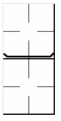

|
 |
Lorsqu'un remplacement défensif implique un changement de lanceur, la ligne horizontale est soulignée par deux traits obliques afin de rendre cet événement plus visible. Ainsi, au moment d'effectuer les calculs concernant les lanceurs, il est possible de distinguer immédiatement les changements de lanceur des autres remplacements défensifs. |
Si un lanceur est remplacé mais occupe un poste de défensif avant de revenir sur le monticule pour lancer, nous additionnons les deux périodes durant lesquelles il a lancé.
| Si un remplacement de lanceur et un remplacement de joueur défensif ont lieu simultanément, indiquez les deux façons d'enregistrer le remplacement. |